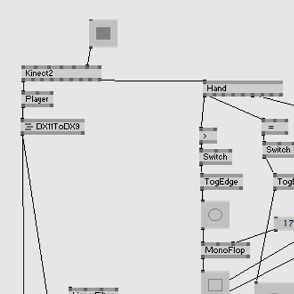
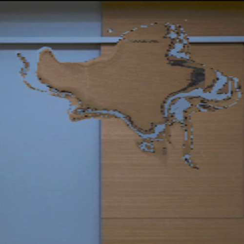

制作テーマ
明暗による見え方の違いをテーマとした研究
制作期間
6ヶ月
使用ソフトウェア
vvvv・Adobe Premiere Pro
コンセプト
この作品は、自身の研究のテーマである「対照的な状況による見え方の違い」の中で、「明暗による見え方の違い」に着目しました。私はこのテーマについて考えた時、電車内から見える「窓の外が明るい時は電車外の景色が映る」ことと「窓の外が暗い時は電車内の景色が映る」ことから着想を得、「明=外側」「暗=内側」と仮定しました。その仮定より明暗の見え方の違いを「自分の外=他人の悪い部分は見えるのに、自分の内の悪い部分ははっきりと見えていない」と解釈し、表現方法を考えました。
vvvvについて
今回私が使用したソフトウェアはvvvvというビジュアルプログラミング言語です。下記の画像のような「ノード」という灰色の箱同士を「リンク」という線で繋げることで言語をしようせずにプログラミングができます。今回初めてvvvvを使用したため、使い方を理解するために参考サイトや参考動画を見たり、実際にvvvvを使用しているVJ(ビジュアルジョッキー)の方に相談したりし、勉強に励みました。
映像イメージ
この作品のテーマである「対照的な状況による見え方の違い」は日常生活の中で発生する出来事です。そして「自分の悪いところは見えていない」という副題をぼやけて流れていくエフェクトで表現しました。これらの「日常的な出来事」「ぼやけて流れる」といったキーワードから『窓についた水滴』を連想したため、人の姿形を水滴のような印象を与えるビジュアルで表現してしています。
